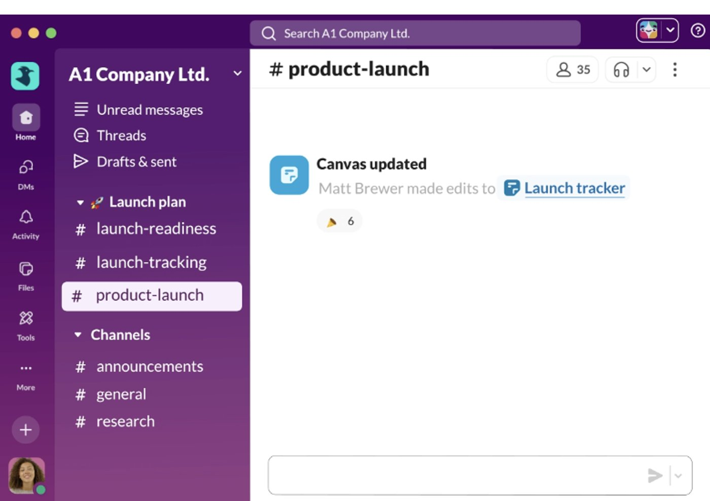

Reclaim your notch.
Notetaker is a small Mac app that quietly lives around your MacBook's notch. Notes, screenshots, music, and video downloads — without leaving what you're doing.
Free during beta. macOS 13 or later.
Anything you copy from a browser, a PDF, a chat —
it's a row in Notes the moment you let go of ⌘C.
From an editor, terminal, or password manager, it isn't.
Shift-Cmd-4 has a home now.
Every screenshot lands in Notetaker. Take just one and it disappears in a few hours. Take two within three seconds and Notetaker decides you meant it, and keeps them.
on any video page, and the file is in Videos.
And the small things you'll feel.
Two hotkeys.
Everything else routes itself.
No cloud. No accounts. No telemetry.
Your notes live in
~/Library/Application Support/Notetaker.
Notetaker doesn't ship a backend. There is no analytics, no sign‑in,
no «allow notifications» popup.
Uninstalling is dragging a single .app to the Trash.
Notetaker 1.0
For macOS 13 and later. 4.5 MB. No sign-up.
Download for MacUniversal binary · ad-hoc signed · checksums · source on GitHub